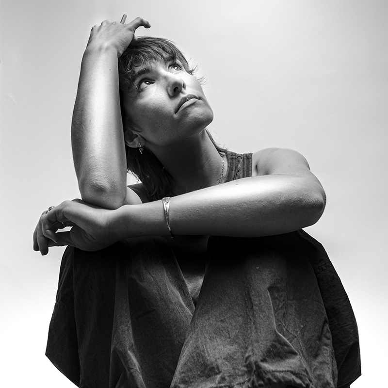
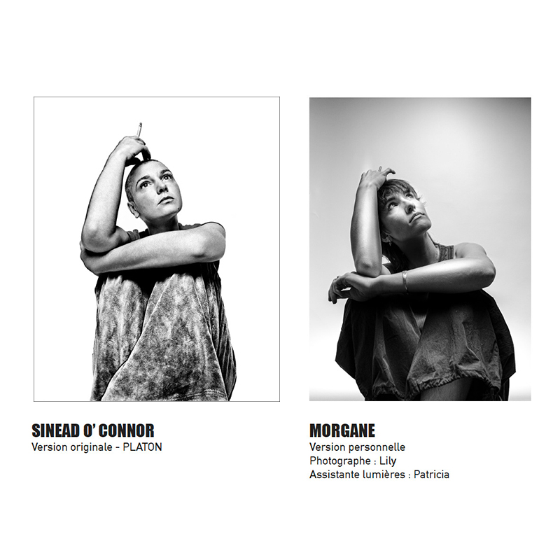
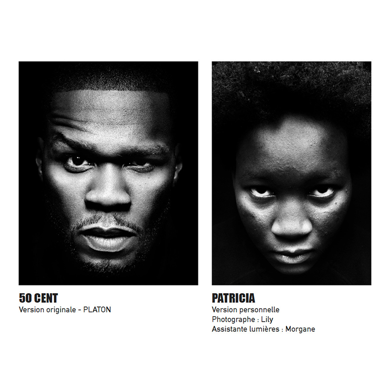
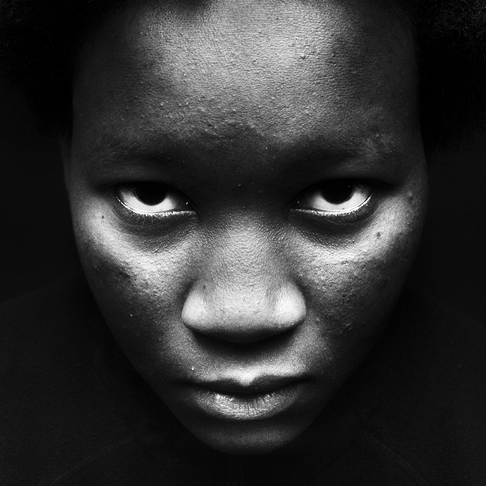
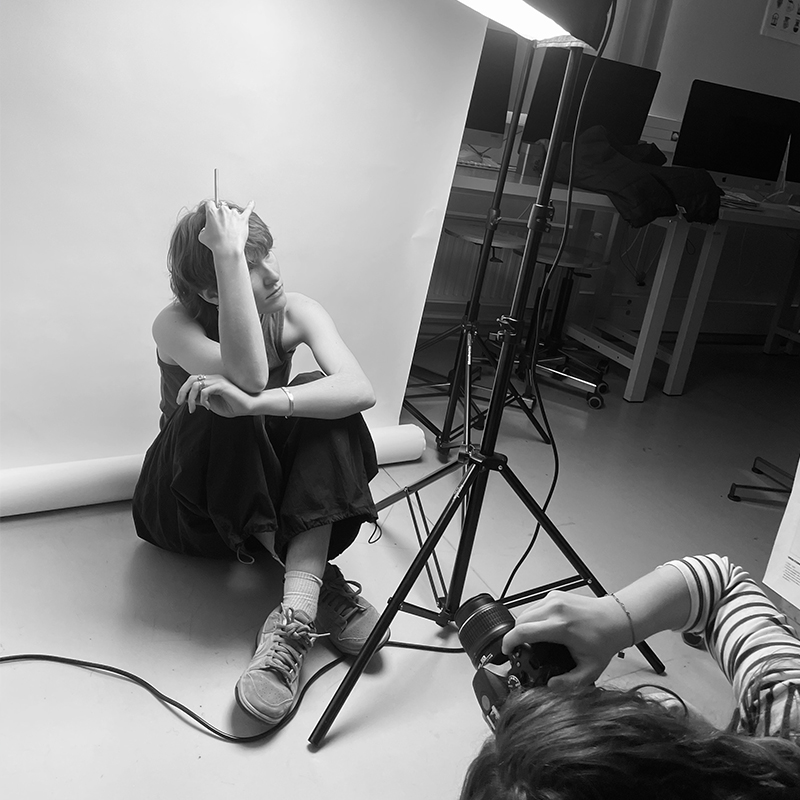
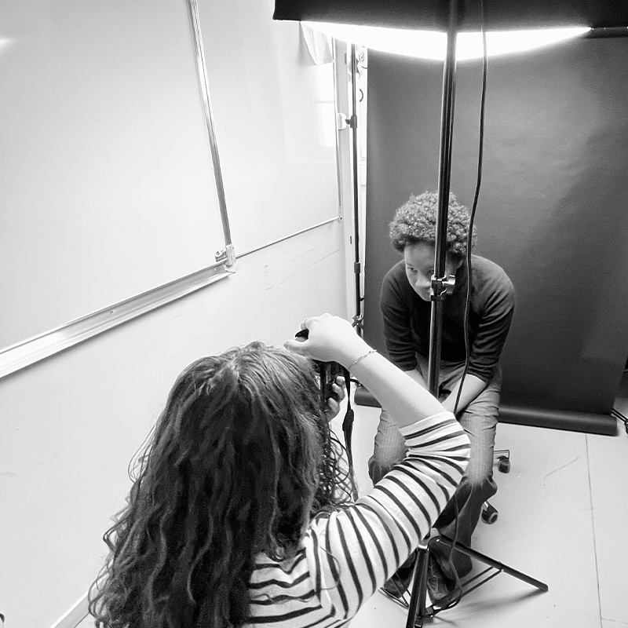

Tabass’ Croc
Packaging
2026
Projet photographique : reproduction de portraits du photographe britannique Platon.
Photos prises à l’aide d’un appareil photo numérique Nikon, sur fonds noir et blanc avec une boite lumineuse Godox 60W - lumière blanche.
Retouches faites ultérieurement via le logiciel Camera RAW, en jouant sur les contrastes pour obtenir un résultat proche du portrait original.





